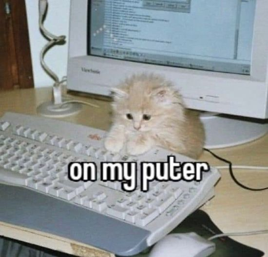
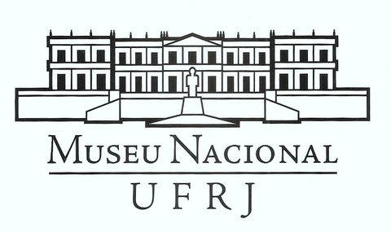
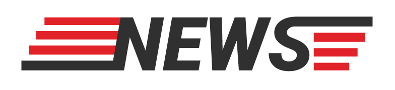

My course projects
Finans - a website for a fake financial management software
Chalé Hotel - a website for a fake hotel
Mobili - a website for a fake software development company
 Museu Nacional - a website for the Brazilian National Museum
 Notícias Cidade - a website for a fake news page
 Spotify - an copy of the old Spotify website
Spotify - an copy of the old Spotify website  Tecblog - a website for a fake tech blo
Tecblog - a website for a fake tech blo Made by Tevo